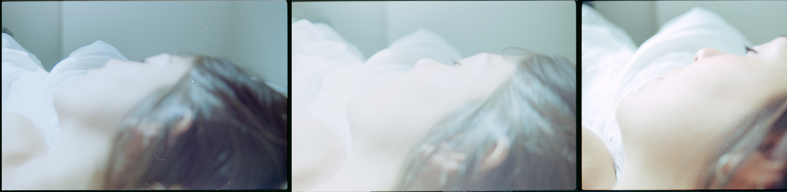
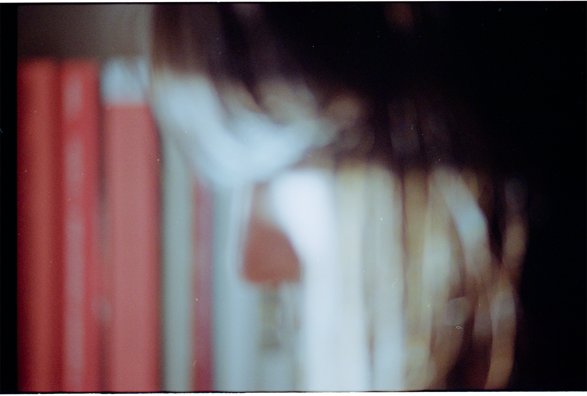

Audiovisual installation, multi-media. 35mm slides, four slide projectors with timers, transparent projection panels. 2018. Photo courtesy of the author.
I'd kept a moment of you
The artwork presents a stream of four narrated, involuntary memories. The dreamlike sequences illustrate recurring intimate moments, which remain hopelessly impersonal. The author portrays the inadequacy of the body in its attempt to express a metaphysical state – love – bound by the brute, corporeal quality of its physicality. Worshipping a moment while consensually submitting to the imposed role within it.


Installation view at Universität der Künste Berlin as part of the group show «Memories of Banality» curated by Eunsol Choi, 2018. Photos courtesy of the author.
The unreal quality of involuntary memories further blurs reality and its borders to a point where it is hard to distinguish between dream and wake, fantasy and actual – summoning memories of the past, assembling memories of the future. Invoking a person or moment, which belongs elsewhere in a mnemonic labyrinth, inducing involuntary time travel.
Are we only allowed a glimpse of beauty when our consciousness is not bound within a timeframe?
 «I'd kept a moment of you.» Photo courtesy of the author.